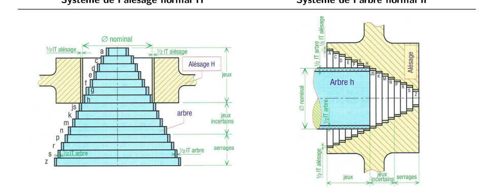
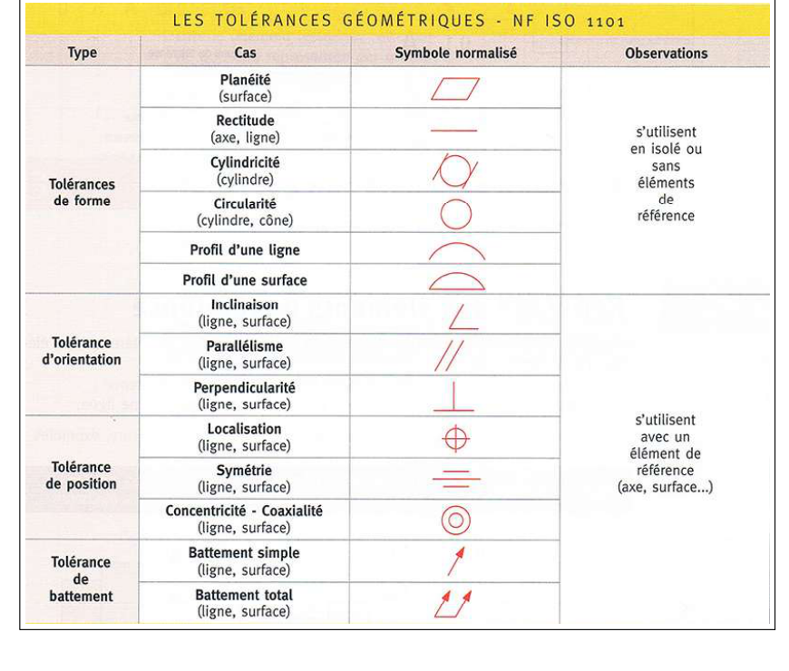
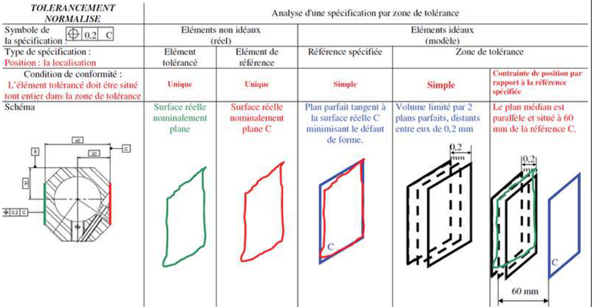

Cotations GPS (dessin technique et tolérancement)
Résumé de cours : spécification géométrique des produits (GPS), tolérancement dimensionnel (ajustements ISO, système de l'alésage normal H), états de surface (rugosité \(R_a\)) et tolérancement géométrique (forme, orientation, position, battement — norme NF ISO 1101). Pas de TD officiel dans la source : la section « Exercices créés » propose 3 applications numériques originales. Source : S2I CM C01 — Cotations GPS (13 p., scan image).
1. Principes et vocabulaire
- Spécification dimensionnelle : la distance entre 2 points (bi-point) doit être comprise dans un intervalle de tolérance.
- Spécification géométrique : l'élément mesuré (surface, ligne, point) ou un élément dérivé (axe, plan médian...) doit être compris dans une zone de tolérance donnée.
2. Tolérancement dimensionnel — ajustements ISO
2.1 Ajustement ISO
2.2 Système de l'alésage normal H

- H7g6 : glissant (avec jeu) — assemblage possible à la main, guidage précis.
- H7m6 : maillet (serrage « léger ») — assemblage au maillet, jeu incertain.
- H7p6 : presse (serrage important) — assemblage à la presse.
3. États de surface
| \(R_a\) (µm) | Qualité |
|---|---|
| 25 | Surface très rugueuse (sciage, oxycoupage) |
| 6,3 | Surface grossière |
| 3,2 | Finition moyenne (usinage courant) |
| 0,2 | Finition de haut niveau (rectification, rodage) |
4. Tolérancement géométrique

4.1 Tolérances de forme — s'utilisent seules, sans référence
| Type | S'applique à | Signification |
|---|---|---|
| Planéité | surface | la surface réelle doit rester comprise entre 2 plans parallèles distants de \(t\) |
| Rectitude | axe, ligne | chaque génératrice (ou l'axe) doit rester entre 2 droites parallèles distantes de \(t\), ou dans un cylindre \(\varnothing t\) pour un axe |
| Circularité | cylindre, cône | le contour de chaque section perpendiculaire à l'axe doit rester entre 2 cercles concentriques distants de \(t\) |
| Cylindricité | cylindre | la périphérie doit être contenue entre 2 cylindres coaxiaux distants de \(t\) (englobe rectitude + circularité) |
| Profil de ligne / surface | ligne, surface | le profil réel doit rester dans une bande/enveloppe de largeur \(t\) autour du profil théorique |
4.2 Tolérances d'orientation, de position, de battement — nécessitent une référence
| Type | Signification |
|---|---|
| Parallélisme ∥ | l'élément toléré doit rester entre 2 plans (ou 2 droites) distants de \(t\), parallèles à la référence |
| Perpendicularité ⊥ | l'axe (ou la surface) doit être compris dans une zone de largeur/diamètre \(t\) perpendiculaire à la référence |
| Inclinaison ∠ | idem, mais orienté d'un angle théorique donné par rapport à la référence (ni // ni ⊥) |
| Localisation ⊕ | l'élément (axe, plan médian, point) doit être situé dans une zone (cylindre, sphère...) centrée sur sa position théorique exacte, repérée par des cotes encadrées et une ou plusieurs références |
| Symétrie ≡ | le plan médian doit rester entre 2 plans distants de \(t\), disposés symétriquement par rapport au plan médian de référence |
| Coaxialité / concentricité ◎ | l'axe doit être contenu dans un cylindre \(\varnothing t\) coaxial à l'axe de référence |
| Battement simple / total | écart maximal mesuré (radial, axial ou oblique) pendant une rotation complète de la pièce autour de l'axe de référence |
4.3 Exemple de remplissage d'un tableau de tolérance

- Identifier le type de spécification (symbole) et la valeur \(t\) de tolérance.
- Identifier l'élément toléré (flèche) et la ou les référence(s) spécifiée(s) (triangle(s), lettres dans le cadre).
- Construire la référence : élément idéal (plan/droite parfait) tangent ou ajusté au mieux sur l'élément réel de référence.
- Construire la zone de tolérance : volume/surface idéal(e) de largeur \(t\), positionné(e) exactement (cotes théoriques, sans tolérance propre) par rapport à la référence.
- Condition de conformité : l'élément réel toléré doit être situé tout entier à l'intérieur de cette zone.
5. Exercices créés
Aucun TD officiel n'accompagne ce cours : les 3 exercices suivants ont été construits pour appliquer les notions ci-dessus (ajustement ISO, lecture de tolérance géométrique, calcul d'angle maximal).
Un arbre est monté dans un alésage selon l'ajustement \(\varnothing40\,\text{H7/g6}\). À l'aide des extraits de tables ISO du cours (plage de dimensions nominales 30 à 50 mm) : \(\text{H7}\) : \(E_i=0\), \(E_s=+25\,\)µm ; \(\text{g6}\) : \(e_s=-9\,\)µm, \(e_i=-20\,\)µm. Calculer les cotes limites de l'alésage et de l'arbre, puis le jeu minimal et le jeu maximal de cet assemblage. L'ajustement est-il cohérent avec la règle du cours (H7/g6 → jeu) ?
1) Cotes limites de l'alésage (H7)
\[D_{min}=D+E_i=40{,}000+0=40{,}000\ \text{mm}\qquad D_{max}=D+E_s=40{,}000+0{,}025=40{,}025\ \text{mm}\]2) Cotes limites de l'arbre (g6)
\[d_{max}=D+e_s=40{,}000-0{,}009=39{,}991\ \text{mm}\qquad d_{min}=D+e_i=40{,}000-0{,}020=39{,}980\ \text{mm}\]3) Jeu minimal et maximal
\[J_{min}=D_{min}-d_{max}=40{,}000-39{,}991=0{,}009\ \text{mm}=9\ \text{µm}\] \[J_{max}=D_{max}-d_{min}=40{,}025-39{,}980=0{,}045\ \text{mm}=45\ \text{µm}\]Un trou de \(\varnothing12\) est spécifié \(\oplus\ \varnothing0{,}08\ A\), avec des cotes théoriques encadrées de 25 mm et 45 mm par rapport à la référence \(A\) (surface plane). Décrire la zone de tolérance, puis déterminer l'écart de position maximal admissible du centre du trou par rapport à sa position théorique, dans n'importe quelle direction du plan.
1) Description de la zone
Le symbole \(\oplus\) (localisation) avec une seule référence \(A\) et un diamètre de zone \(\varnothing0{,}08\) définit une zone cylindrique de diamètre 0,08 mm, d'axe perpendiculaire à \(A\), positionnée exactement par les cotes théoriques 25 et 45 mm (sans tolérance propre — c'est le rôle des cotes encadrées). L'axe réel du trou de \(\varnothing12\) doit être contenu tout entier à l'intérieur de ce petit cylindre.
2) Écart maximal du centre
Une surface plane, de hauteur utile \(L=50\,\)mm, est spécifiée \(\perp\ 0{,}1\ A\) (perpendicularité par rapport à une référence \(A\)). Cette surface doit rester comprise entre 2 plans parallèles distants de \(t=0{,}1\,\)mm, perpendiculaires à \(A\). Déterminer l'angle maximal \(\theta_{max}\) dont la surface réelle peut s'écarter de la perpendicularité stricte.
Mise en équation
Dans le pire des cas, la surface réelle est un plan incliné qui reste tangent aux deux plans limites de la zone de tolérance sur toute la hauteur \(L\) : l'écart transversal maximal entre le haut et le bas de la surface est alors égal à la largeur de la zone \(t\) (cas limite où le défaut d'inclinaison « consomme » toute la tolérance sur la hauteur \(L\)). On a un petit triangle rectangle de côtés opposé \(t\) et adjacent \(L\) :
\[\tan\theta_{max}=\dfrac{t}{L}=\dfrac{0{,}1}{50}=0{,}002\]Interprétation physique : un écart angulaire supérieur à environ 0,115° ferait sortir la surface réelle de la zone de tolérance de 0,1 mm avant même d'atteindre la hauteur \(L=50\,\)mm — c'est donc bien la valeur limite admissible pour un défaut d'inclinaison pur (sans défaut de forme superposé).
📂 Documents donnés
Ressources complémentaires (manuels de référence, non utilisés comme source principale)
Deux ouvrages de référence générale sont présents dans le dossier Moodle du chapitre (non copiés ici, trop volumineux — ~350 Mo et ~77 Mo) : Guide des Sciences et Technologies Industrielles (Fanchon, 2007) et Guide du Dessinateur Industriel (GDI, Chevalier, 2004). Ce sont des manuels généraux de mécanique/dessin technique, à consulter en complément si besoin — le cours ci-dessus est basé exclusivement sur le CM du prof.